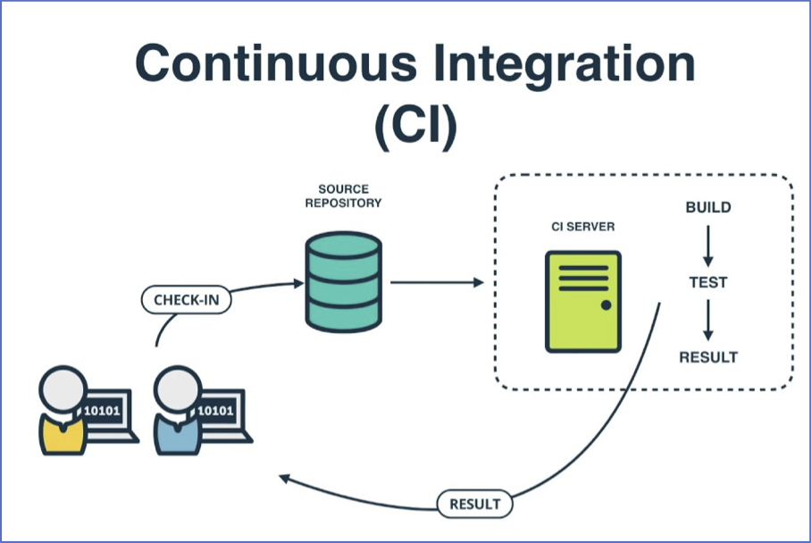

Seán Mulcahy BlogSome ramblings
SKY Store
Sky Store
Sky Store 3B
Phase 3B will extend the Sky Store Buy & Keep proposition to offer various enhancements of content and features on STB and compatible OTT devices.
- Pre-order
- Early Digital Release
- Base Price Management (base & stunt prices)
- Multiple Purchase Options (Digital only, Digital & DVD, Digital & Blu-ray etc.)
- CISCO (STB)
- CINRAM (Physical DVDs and SKUs etc)
- CBS (Billing)
- BSS DB
- BSS desktop client app
- Messenger
- VODCast
- Price Manager
Interacting with users
People - Tim (Motiviating someone example)
Situation:
Took over a team where the employee was in the following situation:- Disgruntled
- Has Talent
- Didn't get on with previous manager
- Not a good annual review
- Not happy with salary
- Coasting because he was disgruntled
- Was likely to leave - told me this in our first 1 to 1
Task:
Try and maintain a team and not loose talent from the team / company. Do this by trying to understand what are the things that would re-motivate this individual.Actions:
- Started with a clean slate
- Control the controllables - couldn't do anything with salary without evidence that it was merited
- Setup regular 1 to 1's
- Gripes he had were with Sky or previous manager
- Objectives - to be challenged technically
- Interact more with the department Principle Engineers
- Lead discussions with Architects
- Objectives - career progression to Senior Dev (& potential salary increase that would come with that)
- Got him to join internal tech forums to represent us
- Leading the team now technically
- Go to Tech conference as a reward
Results:
- He stayed on the team
- Was happy with focus on him as an individual and his career through 1 to 1's
- Over time 1 / 1's became more productive and focused on him and his progress and contribution to team / dept and less complaining about previous issues
- through the objectives that were set around leading the team technically, challenging and interacting with the architects and collaborating more with senior technical people in the department he was awarded a promotion to senior developer
- when a new team was formed on a green field project he lead the team technically and was better at collaborating with the team members and mentoring and coaching them
- Overall a re-motivated team and department member who is now leading a team technically and helping others on the team and contributing positively to the department
People - Annette
Situation:
An old school developer in attitude and skill set, who had a bad reputation competency wise, and from a work ethic point of view, mainly because of the group she hung out with. She was perceived to have been hanging off the coat tails of others and it wasn't clear what her contribution was or if she was a competent developer or not.
Task:
Try and improver he skills and also decide if she was someone we wanted to keep in the team / company.
Action:
I gave her a fresh start on a new team that we formed. The team ways of working, was going to be more agile and modern than where she had come from. There was a graduate on this team who had a great attitude and work ethic, although she was young, Ellen set a good example for people like her to realise they had no excuses.
She clearly had to improve her development skills. In 1-1's she acknowledged this and we came up with objectives for her to improve her coding. It was clear from talking to her that she lacked confidence. We came up with ways she could contribute to the new team outside of coding. She had the most domain knowledge and she could step up and take more ownerships of task.
Results:
She started to embrace the news ways of working. She had the domain knowledge and was able to help get the team get up to speed and also help break down the tasks from an analysis stand point She also took ownership of her tasks and started to deliver. Over time by pairing with the stronger developers in the team she started to improve her coding. Since then she has been seen to taking the lead on the teams she has been on since.People - Michael
Personality/Character traits
Situation:
- Good technically
- Motivated to achieve team goals & personal gaols
- Motivated to improve team and processes
- Motivated for self improvement
- Not afraid to call people out. Good and Bad. Good for external things blocking the team, bad for individuals within the team
- Single Minded
Task:
- Personality traits are what needed to be improved.
Action:
- Wanted feedback (constructive)
- Evidence - anonymous feedback
- Objectives
- In a team environment, need to be more conciliatory / considerate of others
Results:
- Brown Bags for team and department
- Promotion to Senior Devs
- Collaboration with Senior Developers in the dept
- Joined department communities
People - Aasim
Situation:
- new to being a manager of a big team
- previously only did task management for a small scrum team
- No line management experience
- Needs to keep on top of delivery, budgets
- Has a Scrum Master cert
Task:
Action:
Results:
- Line management - conducting regular 1/1', listening, motivating
- Thinking about career progression & succession planning for his employees
- Setting team's objectives
- Engineering understanding
People - Bhaanva
Personality/Character traits
Situation:
- Passionate
- Organised
- Right ways of working
- Cares about delivery
- Department culture - setup hack days, work intake process and involved in dept initiatives for continuous improvement
- Communication Issues - not concise enough, not good at judging the audience and what message they should hear
- Too Verbose
- Overbearing - was good to address issues head on quickly but sometimes way too quickly when emotions were still high
- Rubs some people up the wrong way because of these behaviours
- Wasn't understanding why she wasn't being considered for promotion to next level.
- tendency to escalate everything and not handle things herself. Meant manager gets dragged into everything. Needs to be able to handle situations herself, in particular the little things
Task:
- Line management
- career progression
- make understand what was blocking her getting promoted into the DM role she wanted despite being excellent at delivery
Action:
- Patience
- Time to breath
- not sweat the small stuff
- Pitch differently depending on the audience
- Talked about next level stakeholder engagement
- Be cocncise in meetings. Get the main 2/3 points across, not delve into all the detail
- Be less combative in email comms, face to face dialog instead
- 'Check' herself as she is talking to see if she is entering a similar situation
Results:
- Harder when it is character traits - will take longer for them to adjust & correct
- Improved on email comms,
- Learned to 'check' herself with communications
- She learned to delegate more
- Gave more responsibility to the team and learned to not micro manage as much, team is now more empowered
- Managing managers now
- deal with stuff herself and not have to escalate everything
People - WB - Learning how to do line management properly
Situation:
- Analyst on the team
- Passionate
- Understood the system very well and what needed to be changed for projects
- Major communications issues -- Way to verbose (verbally and written) and often goes off on complete tangents
- Not ideal given his role and given the level of interaction he had with the customer
- people tune out from conversations or don't read all the emails etc.
- Not able to judge the audience and tailor info differently when directed at developer or PM
- early in my managerial career
Task:
- PDP had to deliver feedback but knew he would challenge me on it
- Prepared bid PDP appraisal document listing the issues and giving examples of where he displayed those issues
- Ironically I went into great detail to point out all these issues
Results:
- Having the detail prepared worked in terms of the evidence was there so he couldn't really challenge but ended up acknowledging
- However learned from this not to keep all the feedback to end of year / 6 month appraisals
- don't leave all the bad news until the end of the year
- Better to address as you go in regular 1 to 1's where you have recent examples to point out and to allow them to correct as they go, won't be a shock at the end of the year
- 6 montly appraisals should just be a summary of all conversations throughout the year
5 Teamwork Products
- CRM
- Project
- Desk
- Chat
- Spaces
Sugggestions for additions to products:
ScreenfulPoppulo
Poppulo product overview. Poppulo enables organizations to plan, target, publish, and measure the impact of their communications across multiple digital channels, all in one place.
- Newsweaver -> Poppulo (2017)
- Email marketting solutions -> Internal Comms
- 163 employed in Cork and 37 in Boston
- used by 800 organisations- Nestle, Unilever, Rolls Royce, Boston scientific
- Founded by Chief Exec- Andrew o Shaughnessy in 2002
IT companies in Cork
All these were at RebelConf:
- Xanadu Consulting
- Over-C
- Qualcomm
- Zendesk (possibly not Cork)
- Johnson Controls
- FireEye(Cyber security)
- Forcepoint(cyber security)
Recruitment Sites:
Background
- Been in the IT industry for 15 years in only 2 companies
- Became a tech lead and was a bit of an all rounder so moved into management roles.
- However overtime this meant slowly was less involved in the programming side and more about technical management etc
- Main technologies used:
- TCL
- CVS
- HTML & JS with Ajax being the flashy new way of dynamically populating HTML
- Unix and scripting languages
- SQL & Informix DB
Benefits of moving company
- Out of the cocoon after 12 years
- Learned to have confidence in my abilities
- Learned that I am good and have had great experience
- Learned that also I had to more to experience & learn
- Different culture
- Different ways of working
- Different and fresh Industry
- Getting up to speed fast with a new company, team and domain
- Experience of a big company (10K employees) v 50-> 600
Hardest part of being a manager?
One of the hardest thing to do as a line manager is to manage people who have character / personality things to improve on.It can be a difficult subject to broach as it can be quite personal. They may not want to acknowledge it and also it could be a long process for someone to change parts of their personality or makeup.
Two examples of this I have had to deal with have been someone who has
- Bhaavna
- Michael/Will B
Managing Gods gift
Managing Managers
- Bhaavna - SM
- Leon - SM - line mgmt, OCD
- Aasim - SM - line mgmt
- Stefanos - TL - needed to learn to delegate and trust others, did too much himself
- Panos - TL - experienced, calm, seen it all before
- Alex - TL
Progressing developers towards Senior Developer
Not just being good technically, what else do they need to do ..- Tom
- Michael
Graduates going to Developer level 1
- Ash
- Jazib
- Ellen
Apprentices completely new to technology
- Harry
- Kavita
- Tanya
Other tidbits
- WED Club - weekly meeting to give brown bags on topics like CI/CD, Jenkins, Coding (Java, Spring), Testing (testing pyramid, unit test, Cucumber BDD, Unix, Servers, K8. Give them tasks to complete as homework
- No point pairing with Senior Developers, they'll be overwhelmed and the Senior Devs will be bored at going so slow and also might have forgotten how to explain the simple step
- Pair with someone next level up, someone who has just been through it
- For 2 of them we gave them a (non mission critical) project to pair on
- Very daunting for them, so much to learn about ways of working, coding, tools, 3 letter acronyms
- Simple objectives, small goals, learning is the main goal, soak up info, eventually they will be able to contribute
- Don't treat everyone like the old saying 'as you would like to be treated'
- Diff people are motivated differently
- guide the managers
- get them to trust and to delegate
- get them to worry about people's careers
- Managing Gods gift
- Progressing developers towards Senior Developer - Not just being good technically, what else do they need to do ..
- Graduates going to Developer level 1
- Company focus rather than own selfish view as an employee
- One of the main people leave jobs is becasue of their manager
- Team building/team socials
- Culture
- Distributed Teams
- Establish good ways of working
- Clear direction
Hardest part of being a manager?
One of the hardest thing to do as a line manager is to manage people who have character / personality things to improve on.It can be a difficult subject to broach as it can be quite personal. They may not want to acknowledge it and also it could be a long process for someone to change parts of their personality or makeup.
GIT
People - WB - Learning how to do line management properly
Situation:
- Analyst on the team
- Passionate
- Understood the system very well and what needed to be changed for projects
- Major communications issues -- Way to verbose (verbally and written) and often goes off on complete tangents
- Not ideal given his role and given the level of interaction he had with the customer
- people tune out from conversations or don't read all the emails etc.
- Not able to judge the audience and tailor info differently when directed at developer or PM
- early in my managerial career
Task:
- PDP had to deliver feedback but knew he would challenge me on it
- Prepared bid PDP appraisal document listing the issues and giving examples of where he displayed those issues
- Ironically I went into great detail to point out all these issues
Results:
- Having the detail prepared worked in terms of the evidence was there so he couldn't really challenge but ended up acknowledging
- However learned from this not to keep all the feedback to end of year / 6 month appraisals
- don't leave all the bad news until the end of the year
- Better to address as you go in regular 1 to 1's where you have recent examples to point out and to allow them to correct as they go, won't be a shock at the end of the year
- 6 montly appraisals should just be a summary of all conversations throughout the year
What is good culture
No Blame Culture
- Positive belief that employees want to be fully participative members of high-performing teams.
- No one comes to work with the intention of doing a poor quality job.
- If a problem is occurred, the roots of it are searched for in an organizational deficiency, not in deliberate actions of an employee.
- Encouraged to speak openly about problems and mistakes.
- Empowered to be honest and open about the obstacles to progress.
Empowerment:
- Trust: Encourage people to feel free to fail.
- Accountability
- Team to understand why we are doing a project e.g. Encourage project kick off meetings to help understand the 'why'.
- Ignore Change management? Ah- not sure this is one I agree with (smile)
Shared responsibility
- Encourage a 'No Blame culture'
- Wash up sessions as a team to help understand how we can learn from our deliveries- good or bad!
- Rotate responsibility- taking turns for ceremonies etc
We feel equal
- People don’t talk over others:1 person talks, everyone listen
- Rotate responsibility. Don’t have favourites even for organising team events
- Facts not feelings
- Team health checks
We have fun
- Inspirational quote of the day
- Regular team events
- Sports clubs- doing activities together e.g. doing swimming together for 10 months-once every month
- Team building events e.g. bowling etc
- Music Fridays i.e. Spotify; or beer and video afternoon
Knowledge sharing
- Use of common tools like Git and Slack
- Generalists over specialists
What is Agile?

- Inspect & Adapt
- Transparency
- Lean
- Pragmatic
- Not wedded to Scrum/Kanban
- Empowering the team
- Clear direction/goals
- Inspect and Adjust
- Agile Manifesto items
 Questions:
Questions:
- What is agile testing?
- How is agile methodology different than traditional waterfall process?
- What are pros and cons of agile methodology?
- What kind of projects is suitable for the Agile methodology?
- What are different types of agile methodologies?
- Difference between extreme programming and scrum?
- Can you explain lean methodology in detail?
- What is Kanban?
- Is there any difference between incremental and iterative development?
- What are burndown and burn-up charts in agile methodology?
- Can you explain pair programming and its benefits?
- Do you know what is the scrum of scrums?
- What is the velocity of a sprint and how it is measured?
- According to you what are some qualities that a good agile tester must have?
- Can you list some responsibilities that a scrum team have to undertake?
- How long were your sprints for the projects you have worked on?
- What kind of project management tools were used for your project?
- Have you used automated test tools earlier? How was your experience?
- Did your iterations overlap?


Extreme Programming
=================== https://ronjeffries.com/xprog/what-is-extreme-programming/ https://www.agilealliance.org/glossary/xp/#q=~(infinite~false~filters~(postType~(~'post~'aa_book~'aa_event_session~'aa_experience_report~'aa_glossary~'aa_research_paper~'aa_video)~tags~(~'xp))~searchTerm~'~sort~false~sortDirection~'asc~page~1) =================== The method prescribes a small number of absolutely essential practices and encourages teams to perform those practices as good as they possibly can, almost to the extreme. - communication - simplicity - feedback - respect - courage =================== - Team who work closely together with the customer representitive - Focused on business value, the team produces the software in a series of small fully-integrated releases (CI) that pass all the tests the Customer has defined. - Extreme Programmers work together in pairs and as a group, with simple design and obsessively tested code, improving the design continually to keep it always just right for the current needs - team keeps the system integrated and running and use small releases of working and tested code to do this - entire team is responsible for the code, it's quality and standards are consistent. Design is simple and understood by all - pair programming and test driven development are used for good programming (2 sets of eyes and lots of swapping) for learning and tests are for early feedback - planning - release planning - Initial Bigger picture plan (with customer) is revised regularly by the team (keeps context of the bigger picture with the samller iterations) - iteration - sprints planned based on prev velocity - progress is always visible and nothing is every 90% done (it's either done or it is not) - sustainable pace (don't burn out), it's more productive this way - Incremental Design - design improvement is done as you go - refactoring (along with associated tests) - Extreme Programming focuses on delivering business value in every iteration. To accomplish this over the course of the whole project, the software must be well-designed. The alternative would be to slow down and ultimately get stuck. - ten minute buildLean
- https://www.planview.com/resources/articles/what-is-lean/ - The two pillars of Lean are continuous improvement and respect for people. - Cont Improvement - Lean focuses on adding value, rather than removing waste - focusing only on value-adding activities, - Identify (something to improve upon), plan (on how to improve it), implement, review - autonomy, mastery, purposeWhat is good engineering?
- CI/CD
- KISS
- Ownership - Build for longevity
CI/CD - Continuous Integration/Continuous Delivery
Continuous Integration (CI) is a development practice that requires developers to integrate code into a shared repository several times a day. Each check-in is then verified by an automated build, allowing teams to detect problems early.  By integrating regularly, you can detect errors quickly, and locate them more easily.- Maintain a single source repository
- (Encourages) frequent commits
- Automate the build
- Make your build self-testing
- Fail fast
- Every commit should build on an integration machine
- Safe rollback option
- Snapshot deployments - Make it easy for anyone to get the latest executable version
- Automate deployment
- Build only once, deploy multiple times
Continuous Deployment
Continuous Deployment is closely related to Continuous Integration and refers to the release into production of software that passes the automated tests - Essentially, it is the practice of releasing every good build to users, ideally multiple times a day.Making Culture Change
Situation:
Task:
Action:
Results:
How do you make culture and attitude change at a department level?
A few years ago we started this process in the department I was in. It was an old school mentality department with more of a waterfall non agile mind-set by the people running it and also from the developers on the ground. Releases were 'Big Bang' project releases every quarter (at best), which had major months long test phases running up to them. Small but important changes or simple bug fixes got held up and had to wait on the release train. A lot of the time these changes not only didn't make it into the next release but the release after that, as code was locked down for this rigorous manually testing phase. Even still most releases had serious bugs in them. Multiple major branches had to be maintained and merging was big ordeal because of all this causing more bugs as this happened after all the testing on the project branch.
Work was siloed and the development teams only cared about the project they were working on. A dedicated support team managed support of the production system. The did lots of fire fighting and quenched lots of fires. It was a bit of a hero mentality. Because of the silo the development team weren't involved in investigating root cause for these production issues, most of them didn't even have access to production. Because of this environment developers never learned from these prod incidents and instead of engineering an application to avoid pitfalls learned from previous experiences or issues the same basic issues cropped up over and over again. A simple example of this was that data changes would constantly be applied on production rather than fixing
- Siloed work between dev and support
- support heroes quenching fires rather than the teams building the apps stopping the fires happening in the first place
- no real agile culture, monolith application
- lots of contracts v permies, people who have seen people try to make changes / transform change before and failed and are resistant
- use some projects as example projects to show how changes can be releases faster
resistance to change - get a key group to drive the change and identify people within the teams who will help to get the teams to adopt the changes.
Results: Teams assigned ownership of applications. Takes time, long game
Kind of similar process to defining Department Values. For buy-in you’d need a lot of people to buy into it and a good way to do that is to involve them in coming up with a process like below. As discussed probably a cross over between some of the below themes and some of the people survey initiatives going on currently.
Managed to find the old confluence pages for this. The 2 main ones being: http://confluence.bse.intranet.sky:8090/display/WW/Software+Principles which was mainly defined by the Tech people
and http://confluence.bse.intranet.sky:8090/display/WW/Continuous+Improvement with the sub-pages for the following themes:
- People
- Curate - Build the right thing
- Deliver - Build it effectively
- Code - Build the thing right
- Test
- Deploy
Here is an example of the people one:
People
We attract the best people and keep them highly engaged and motivated in a challenging and fun environment Beyond "Basic job titles" -> Job families & core competencies What is job families and core competencies? Creating a clear & consistent career progression path, to encourage personal development at Sky. Identifying a framework for people to work against to develop their skills. Beyond "Generic training courses" -> Knowledge improvement What is knowledge improvement? Increasing the team's knowledge of industry tools, methods and trends, as well as Sky & department-specific information. the better informed our people are, the better the choices they can make. Beyond "Reactive resourcing" -> Building stable capability Beyond "Reviewing CVs" -> Identifying talent Beyond "Onboarding" -> A Warm WelcomeFrom there we listed ‘What are we doing now?’ and then ‘Next Steps’ to create specific tasks to help progress towards achieving these goals.
So lots of this material won’t be relevant to the current department as believe it or not we are more progressive !
You may not have access to these old confluence pages so I have added PDFs of them.